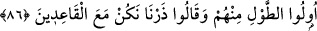

olacağını araştırıp düşünmeyi terk etmeleri sebebiyle “kâfir olarak canlarının
çıkmasını istiyor.”
Bir derviş şöyle demiştir: “Zenginler eşkıyadan daha beter eşkıyadır. Bin bir
meşakkat ve sıkıntı ile dünya malını toplarlar ve türlü türlü belâ ve güçlükle muhafaza
ederler; yüzbinlerce hasretle terk ederler.”
Başlangıçta mal toplamak istersen
Bir çok sıkıntı çekmeyi kendine vazife bilmek gerek
Sonra onun yerinde kalması için
Gece gündüz ona bekçilik etmek gerek
Bunlardan en güç, en zor olanı ise
Hasret çekerek bırakıp gitmek
Bilesin ki bu âyet bu sûrede bazı lafız değişiklikleriyle daha önce geçti. Âyetin
tekrarlanması, âyette verilen nasihati pekiştirmek ve önemini vurgulamak içindir. Bu
sayede nasihati dinleyenin ondan gafil kalmaması gerektiği ikaz edilmekte, nasihat eden
kimsenin de konuşması esnasında, bilhassa iki söz arasına uzun sözler girdiğinde
devamlı olarak bu nasihate dönüp tekrar etmesi gerektiği vurgulanmaktadır.
Bu böyledir. Çünkü gözler mallara ve çocuklara karşı tamahkardır. Nefisler de bu
ikisini devamlı arzu ve temenni ederler. Mal ve evlat, müminler hakkında nimet olsa da,
aslında bunlar münâfıklar hakkında bir cezadır. Çünkü bunlar onların kalplerini
Allah’tan ve O’nu talep etmekten alıkoymaktadır.
Kalplerin en şiddetli azabı ise Hak’tan perdelenmekten ileri gelir. Bu perdelenme ile
azap gören bir kimse imandan mahrum kalmış demektir. Nitekim Allah Teâlâ: “Kâfir
olarak canlarının çıkmasını istiyor.” buyurmuştur. Bu, kalpleri mal ve evlat sevgisi
perdesi ile örtülmüş olarak ölmelerini istiyor, demektir. Nitekim et-Te’vîlâtü’n-
Necmiyye’de böyle zikredilmiştir.
Bir hadiste şöyle buyurulmuştur: “Dünya, nefis ve şehvetlerle kuşatılmıştır.
Dolayısıyla dünyanın şehvetleri ve lezzetleri sizi âhiretten alıkoymasın. Çünkü
âhireti olmayan kimsenin dünyası yoktur. Dünyası olmayan kimsenin de âhireti
yoktur. (Mümin) dünyada Allah Teâlâ’ya itaat etmek suretiyle sâlih amel işler.”[233]
yani mâlî ibadetler yapmak sûretiyle âhireti için azık hazırlar.
86. “Allah’a inanın, Rasûlü ile beraber cihâd edin!” diye bir sûre indirildiği zaman
içlerinden servet sahibi olanlar, senden izin istediler: “Bizi bırak, oturanlarla
beraber oturalım.” dediler.”